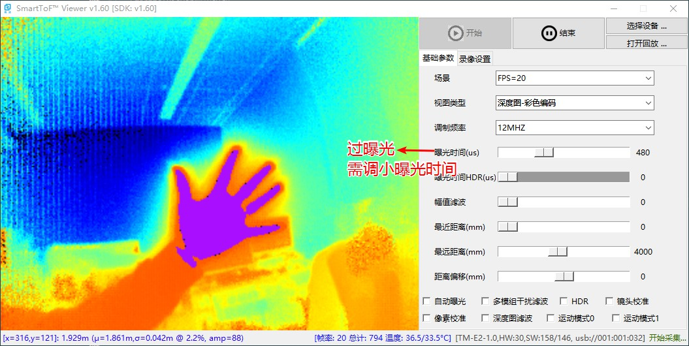
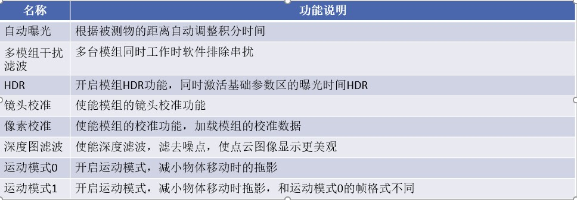

SmartToFViewer使用说明¶
SmartToFViewer简介¶
SmartToFViewer可以用来直接显示被测物体图像，并通过UI设置模组相关参数，查看模组的相关信息和工作状态。SmartToFViewer无需安装，在模组usb驱动安装后即可直接使用。
SmartToFViewer使用¶
SmartToFViewer打开后的整体预览如下，SmartToFViewer主要包括图像显示区、基础参数区、filter设置区、信息区以及模组的开启关闭：

SmartToFViewer功能区说明如下图：

点击开始后，图像区显示采集图像，默认开启未深度图模式，在图像显示区下面显示深度信息。

通过基础参数区修改视图类型，可以选择查看灰度图、深度图等四种模式，如灰度图

如果要开启点云图，则需要同时开启SmartToFViewer和SmartToF_PCLViewer：如下图

SmartToFViewer参数说明¶
通过Smartviewer可以直观的调节帧率、曝光时间、幅值滤波等，基础参数区的详细说明如下图:
.. image:: ../../../images/viewerfig/参数区说明.jpg
如曝光时间一般在物体不过曝的情况下尽量调大，但不能过曝，过曝部分会呈现紫色如下图：
SmartToFViewer的filter功能说明¶
SmartTofViewer的filter功能区主要开启模组相关的滤波功能，滤波功能的具体描述如下图：
